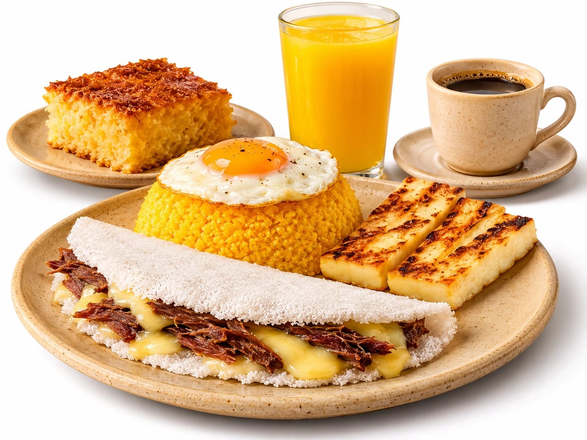
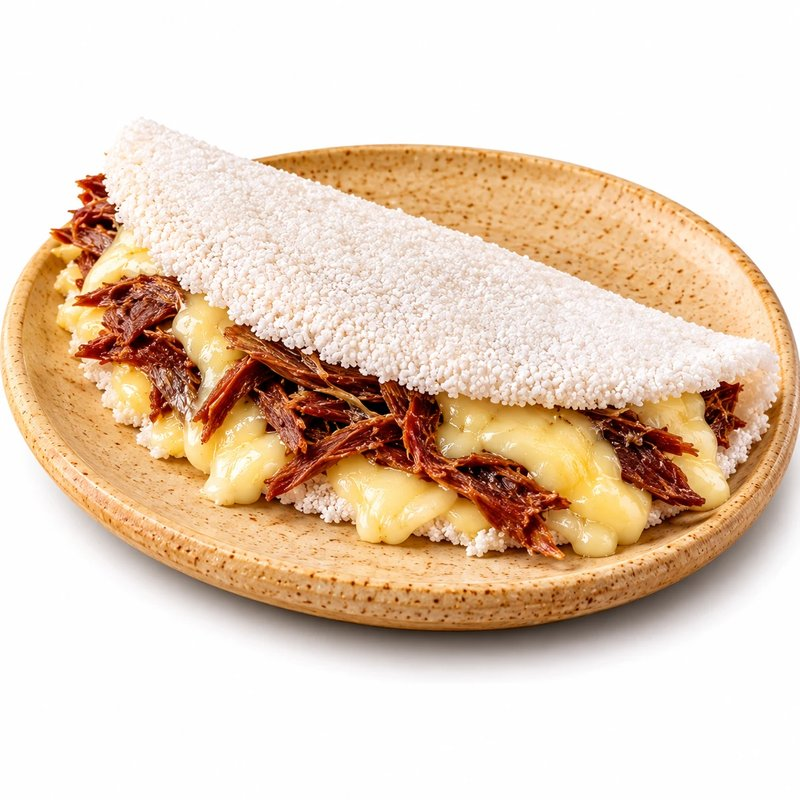

Café da manhã nordestino, do jeito de casa.
Tapioca na chapa, cuscuz quentinho e café passado na hora. Peça pelo app, pelo totem ou pelo site e retire no balcão sem fila.


Peça antes e só busque no balcão.
Cada R$ 1,00 vira 1 ponto de desconto.
Pix e cartão por serviço especializado.
Recife, Salvador, Fortaleza e Caruaru.
Os mais pedidos
Escolha por categoria
Cupons da semana
Do salão de Dona Francisca para o Nordeste inteiro.
A primeira Raízes do Nordeste abriu em um bairro tradicional de Recife, comandada por Dona Francisca e seus dois filhos, com cheiro de cuscuz quente, café passado na hora e manteiga de garrafa. O negócio da família virou uma rede, mas a receita continua a mesma: comida nordestina com rapidez, qualidade e identidade cultural.
Nossas unidades
Peça do seu jeito
Aplicativo
Peça antes de sair de casa, acompanhe o preparo e junte pontos.
Totem
Autoatendimento na loja, rápido e sem precisar de cadastro.
Balcão
Atendimento humano com a mesma fila de pedidos da cozinha.
Site
Faça o pedido pelo computador e retire na unidade escolhida.